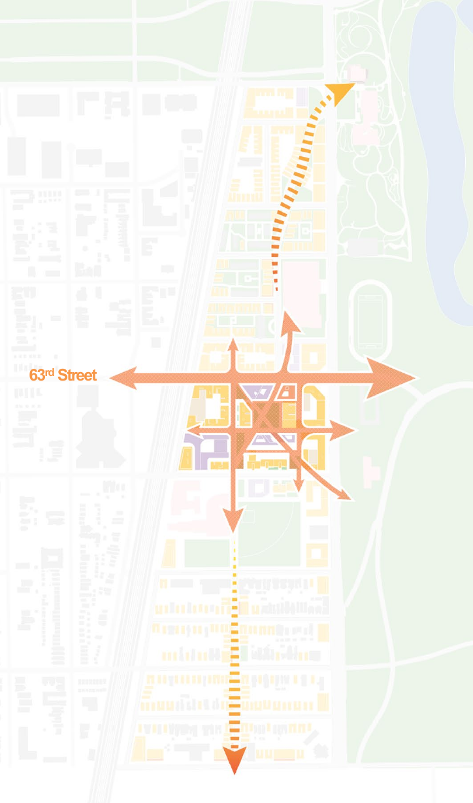
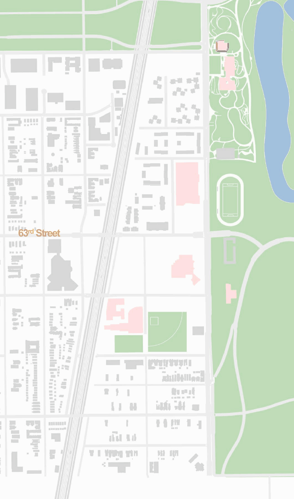
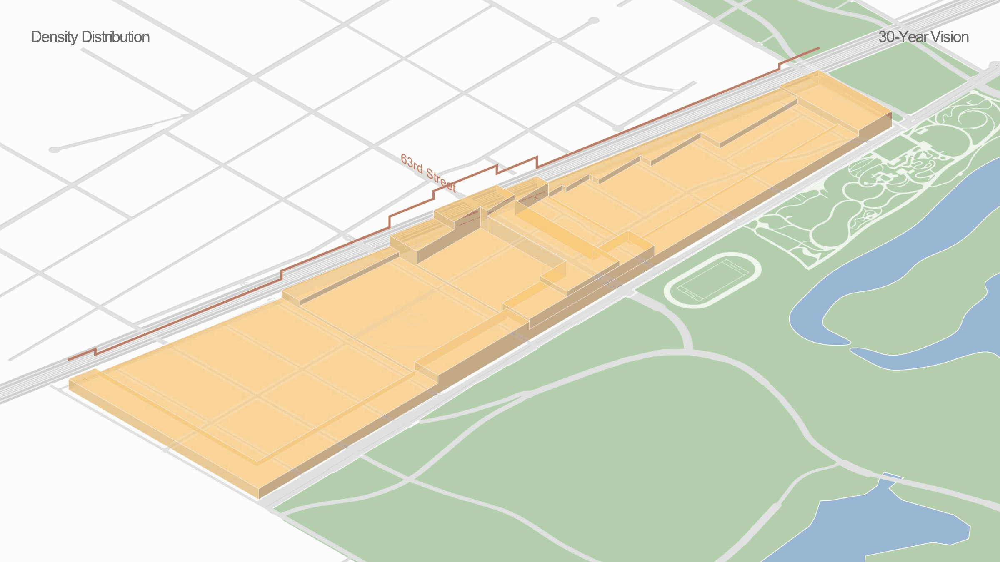
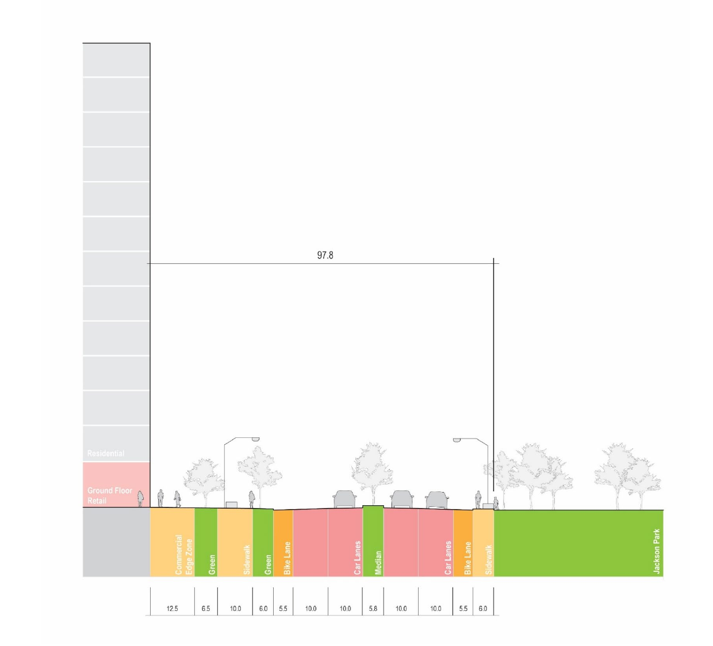
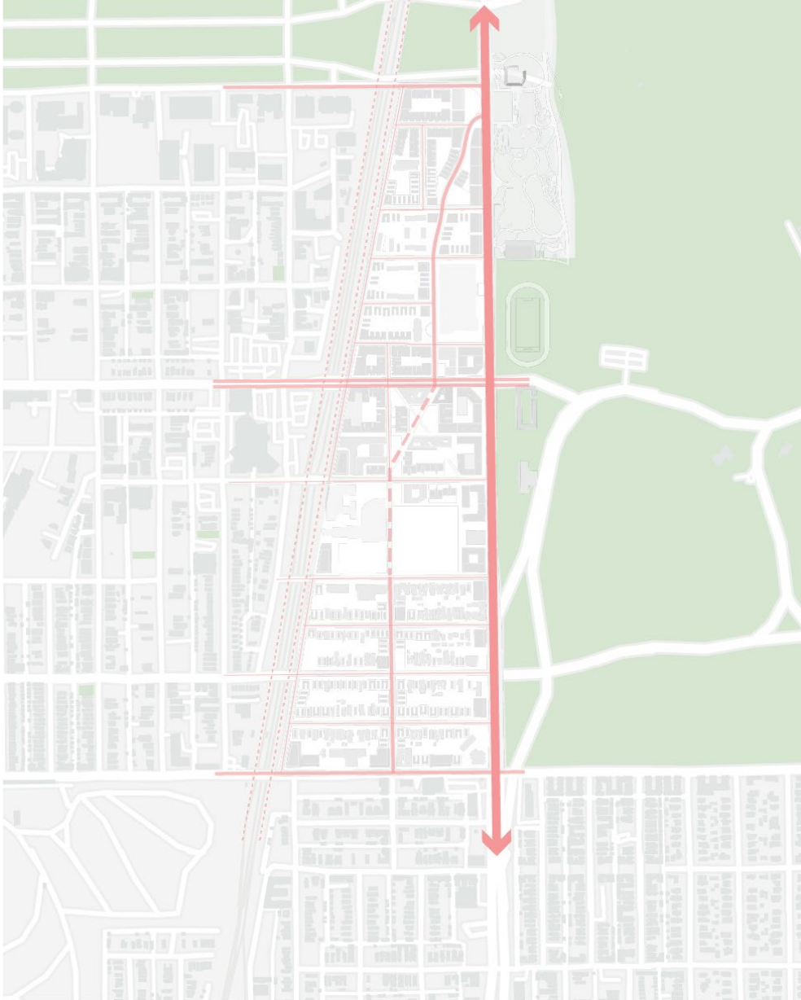
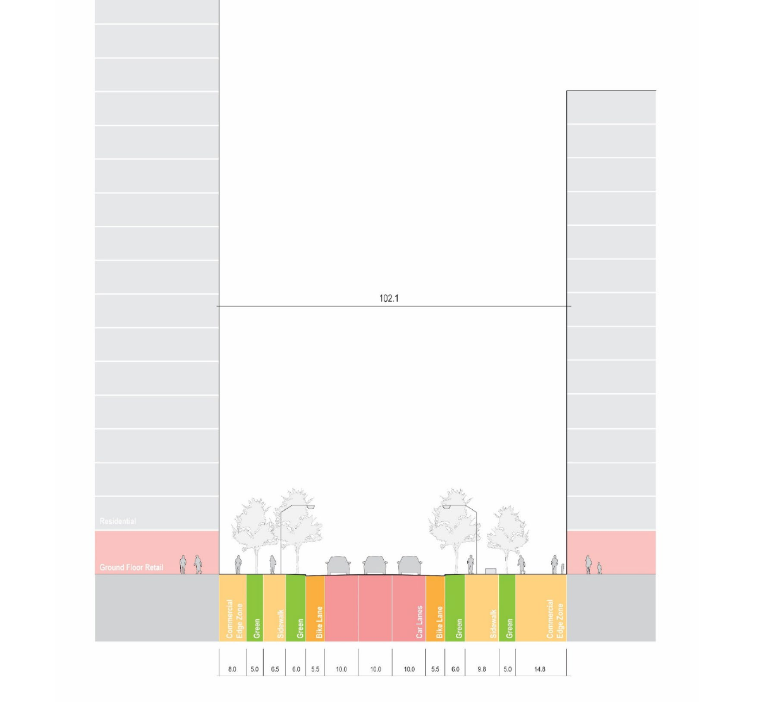
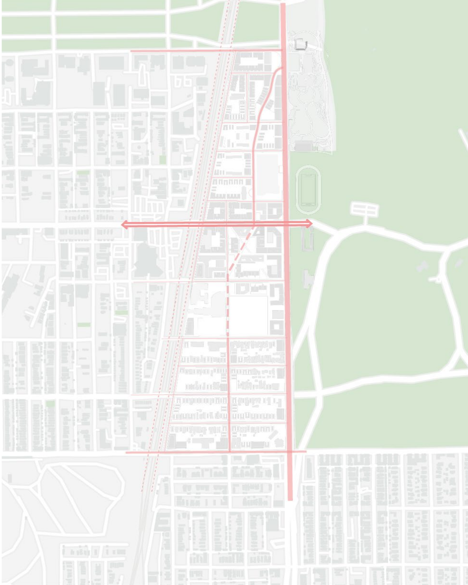
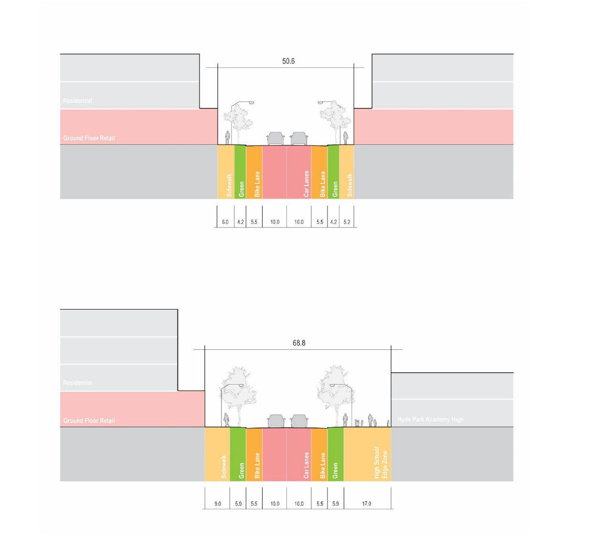
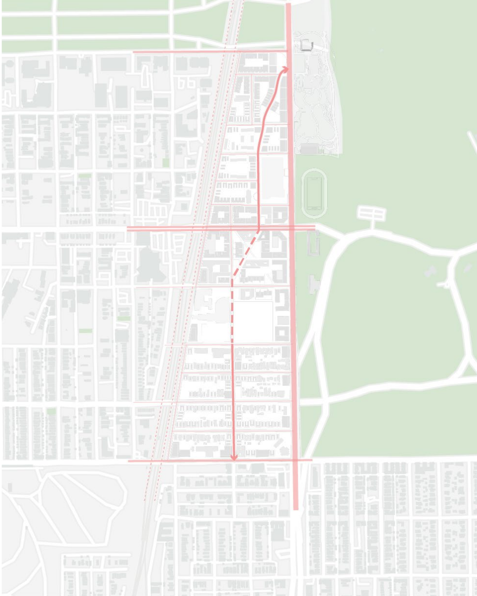

Past
Active Corridor
Stony Island as commercial spine
strong local-serving economy
Housing + Institution Development Project in Woodlawn
The proposal relinks Woodlawn’s institutional anchors with everyday community life through a locally rooted civic corridor and a reimagined YMCA superblock. Housing, local retail, and community programs grow incrementally, while north–south connections integrate institutions into everyday neighborhood life.
Past
Stony Island as commercial spine
strong local-serving economy
Decline
retail collapse
institutional isolation
vacant land accumulation
Present
fragmented community
retail leakage
negotiated development


A locally rooted east-west civic corridor anchored by a reimagined YMCA superblock, where housing and local retail grow incrementally, and north-south connections integrate institutions like OPC into everyday neighborhood life.

Stony Island Avenue, 63rd Street, and north–south connections form a connected street network, linking housing, institutions, and public spaces at different scales.






Low-rise buildings extend Woodlawn’s residential fabric, mid-rise buildings add density along main pedestrian axes, and high-rise towers frame the lakefront and transit node.
A reimagined YMCA superblock brings housing, local retail, and community programs together. Four development phases build this shared neighborhood anchor incrementally.